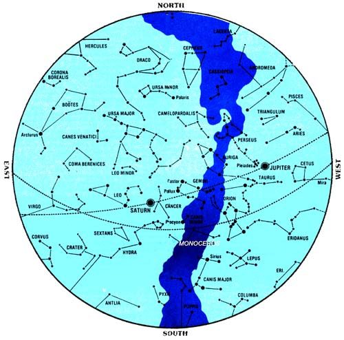
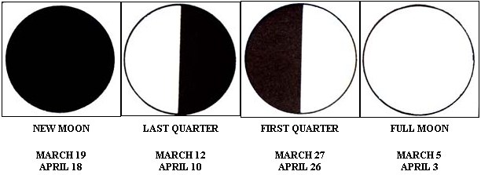
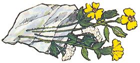
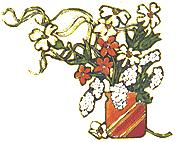
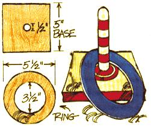
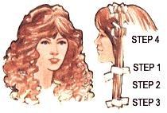
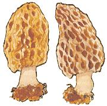
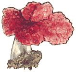

This may be the first generation to set foot on the moon and shoot rocket probes into the reaches of outer space. But, man for man and woman for woman, great granddad and great grandmother-or, for that matter, almost any primitive tribe of almost any past age-knew a lot more about identifying the stars and planets in the night sky than most of us currently do.
And so, with the help of Guy Ottewell (author of Astronomical Physics, Furman University, Greenville, South Carolina 29613), MOTHER is going to try to change all that.
The foldouts in Issue Nos. 43 through 48 are being printed in the form of an old-time almanac and star chart. Save the series. Practice with it (directions for using the maps appear in MOTHER NO. 43). And, if you're a typical child of our modern TV-dominated society, you should know one heck of a lot more about the identification of heavenly bodies by the end of 1977 than you know right now.
Calendar 1977, available for $4.95 from the Department of
1 Venus is as bright as it will be in 1977.
3 The moon appears just south of Saturn. (Note that this is a common event since the moon actually moves by each of the planets once in a 27-1/3-day cycle ... but its passing is often a beautiful sight and a good subject to photograph.)
11 The sun enters Pisces.
19 The Paschal Moon is the new moon nearest to the vernal equinox.
20 The spring (or vernal) equinox occurs when the earth's north and south poles become equidistant from the sun. Day and night will each be 12 hours long at all points on the earth on this date ... except for the poles where the sun will just skim the horizon throughout the entire 24 hours. Spring officially begins in the Northern Hemisphere, fall starts in the Southern Hemisphere, The sun enters the astrological sign Aries, but-in the heavens-it has actually just passed into the constellation Pisces.
24 The moon appears below Jupiter. The asteroid Ceres can be seen with binoculars on the Coma-Virgo border. 30 The moon moves just south of Saturn (see March 3).
2 The comet Grigg- Skjellerup-one of the two brightest predicted comets for this year (most of these bodies appear unexpectedly)-can be seen with a small telescope at the extreme southern part of Sagittarius.
3 The Paschal Term is the first full moon after the vernal equinox. The Sunday immediately following the Paschal Term is always Easter (April 10 this year).
A partial eclipse of the moon begins at 10:03 p.m. EST and ends at 12:07 a.m. EST.
10 The planet Mercury can be seen the easiest of any time during the year because it lies farther (19°) from the sun than on other days. It should appear 1/2 hour after sunset fairly high above the horizon to the northwest.
18 The sun enters Aries.
20 The sun enters the astrological sign Taurus.
21 The Lyrid meteors-the earliest recorded (687 B.C. by the Chinese) of all the major showers-will begin from the direction of the constellation Lyra.
24 Move clocks forward one hour from Standard Time to Daylight Saving Time.
27 The moon passes south of Saturn (see March 3 and 30).
30 The planet Uranus will be visible with binoculars in Libra. Watch before April 20 or after May 5 when the moon has moved from this part of the sky.
On a clear, moonless night you may be able to see as many as 4,000 stars in the sky. These fiery, gaseous bodies resemble our own sun (which-at 109 times the earth's diameter-is big news to us but is actually only a relatively small star).
On the matter of distance: Light (which travels at 186,000 miles per second) takes only eight minutes to reach the earth from our own sun, while the radiance of even the closest star system-Alpha Centauri-must speed through space about four and a quarter years before we see it. And the Great Nebula in Andromeda-the most distant object visible to the unaided eye-is located 1,500,000 light years away in the Big Dipper's "handle". (Since just one light year-the distance light travels during one complete orbit of the sun by the earth-equals six million million miles ... the Great Nebula of Andromeda can honestly be said to be located "a fur piece down the road" away from our own tiny planet.)
Many of the constellations were originally named by the ancient Mesopotamians and Greeks. You may be hard pressed today to find the animals and other objects they "saw" in the stars 2,000 or more years ago (since the patterns have changed somewhat down through the centuries), but the age-old labels remain.
It's also interesting to note that as the Earth revolves around the sun each year, differing areas of the sky are visible to a viewer from one season to the next. Orion, for instance, is a prominent winter constellation which can't be seen during the summer months. And when the sun enters Pisces or Aries-as it does in March and April-these particular zodiacal constellations are not even visible to us at night.
For centuries Polaris (the North Star) has been the prime navigational guidepost in the Northern Hemisphere. Because it's located directly above the North Pole, the star remains "fixed" throughout the year and is a great reference point for star watchers and sailors and travelers in general.
The darker blue band you see in the accompanying chart represents the Milky Way, which appears as a wide arc across the night sky. Our sun is just one of the billions of stars in this huge galaxy.
Not many folks can pass by a stand of early spring wildflowers or a fruit tree laden with blossoms without plucking a floral bouquet to brighten their still-stuffy, winterized homes. And-says author Pamela Westland (Decorating With Wild Flowers, Rodale Press, 1976)-the following few simple steps can help to keep the delicate blooms pretty for even longer than usual:
Plan to cut most flowers (except for the daffodil . . . its buds will mature even after they're picked) when they're just about to come into full bloom. Take a pair of good scissors or a sharp knife outside in the early morning or evening (but not in the heat of the day) and slice each flower's stem off clean and at an angle. (Don't just pull the blossom off with your fingers . . . you'll damage the stem and shorten the bloom's life.)
If you have to transport the cut flowers any distance, pack them loosely in plastic bags lined with wet newspaper. Blow the sacks up like balloons, fasten them at the tops, and carry the packages shaded and protected from the sun.
Once you have the blossoms home, plunge their stems immediately into water. Note that an icy cold bath, however, may actually shock and kill the flowers . . . so instead of drawing water fresh from the tap, let it sit out to warm a bit while you're outdoors gathering the bouquet.
When you finally do arrange your blossoms in a vase, remove all leaves that are attached to each stem beneath the waterline (they'll only decay and discolor the liquid). Allow the leaves above the water's level to remain on their stems, however, so the natural process of photosynthesis can continue and you'll have a cheerful centerpiece for days to come.
If that first irresistible stretch of warm spring weather infects you with the desire to tidy up the ole place a bit, try the following painting tricks. Even after your initial go-to-it enthusiasm begins to fade in the light of actual experience, these simple ideas will make the often-messy task go much easier.
[1] Drill some holes in the end of your paint paddles. Stirring will be simpler and the paint will mix much faster.
[2] Use a nail to punch a few holes in the groove around the rim of your paint can. Then, whenever you wipe off a brush against the edge of the container, the excess paint will run back into the can . . . not over its side!
[3] Cut a circle (make it slightly smaller than the paint can's lid) from a section of old wire screen. Then after you've stirred the paint, lay the circular sieve on its surface. As your new strainer sinks to the bottom of the container it'll trap those nasty lumps beneath it.
Naturally you'll want to set out homegrown seedlings as soon after the year's last frost as possible (especially since an early enough spring planting will frequently allow you to harvest this first crop by mid-summer and plant a second, later, one right behind it in the same garden space). But to keep from losing all those healthy shoots you've carefully tended indoors over the last several weeks, be sure to harden off the young plants-that is, gradually condition them to outdoor temperatures and wind shifts-before you set them out.
About 10 days in advance of your expected planting date, move the seedlings outside to a partially shaded spot for a few hours . . . but be sure to bring the delicate shoots indoors again well before sunset. Then, each day for the next week, expose the started plants to more and more direct sunlight for longer periods of time. And finally, for a night or two prior to your targeted setting date, leave the young plants outdoors all evening . . . in their starting containers and placed on steps or a table (but not directly on the cold ground).
If your seedlings are rowing in a cold frame, of course, the hardeng off process is even easier. Every few days, , simply increase the number of inches that you raise the structure's lid and the number of hours it remains open. By the end of two weeks of this treatment, you can leave the top off all day and night (just beware of any sudden, unexpected frosts).
And when you finally do set your acclimatized plants out, try to schedule the chore for a cloudy day or for the period immediately after sundown so that bright sunlight doesn't damage their tender roots. Keep as much of the original soil as possible intact around the seedlings' bases, and water the plants well both before and after they're transferred.
Maybe April showers do usher in May flowers and beautiful summertime weather. But that knowledge is small consolation for a mother who's trying to entertain a whole crew of youngsters indoors during the traditionally rainy month. What she needs is help. And here it is : a homemade ring toss game which-besides keeping Dad occupied in the shop for a few minutes one damp evening-will amuse even the smallest tyke for hours on end.
To make the ring posts, cut two 5" X 5" X 3/4" pine bases. Drill 1/2-inch hole into the center of each square d glue 6" X 1/2" dowels into the openings. Sand the rod tips and block edges to a safe, half-round bevel, and finish off the two ring posts with a light coat of varnish or wax.
Fashion your six rings from pieces of 1/8-inch hardboard. Using a jig or coping saw, cut 5-1/2-inch-diameter "doughnut" circles with 3-1/2-inch center holes. Then set the two ring posts five yards apart and let the youngsters test their skill!
The next time you-or one of your special friends-want to curl long hair . . . try doing it without the aid of store-bought plastic rollers, metal pins, or clips. It's easy, you know, once you've rediscovered the secret of grandma's old-time paper curl.
Cut a brown paper sack into strips about one and a half inches wide and eight inches long. Then dampen the hair and [1] wrap a strip around a bunch that is large enough to make one wave. Keep the hair flat and smooth. Draw the paper down [2] until the ends of the hair are neatly enclosed and [3] curl either under or over. Roll the wave up as far as desired and [4] twist the paper ends twice-and firmly-against the curl.
For a frizzy look, wet the hair well, put only a little into each paper strip, and roll the curls around a thin pencil. Use more hair per curl, less water, and roll the waves around one or two fingers if you prefer a gentler, more natural look.
If you sleep while your hair sets, you'll find the paper curls much more comfortable than "modern" metal or plastic rollers.
Untwist the paper ends in the morning and leave the corkscrew ringlets bouncing "as is" . . . or comb and brush them into your favorite style.
Many folks know that this is the time of year for the tapping of sugar maple trees. Few people, however, realize that sap collected from a tap doesn't necessarily have to be laboriously boiled down into syrup or sugar.
"For a different kind of treat later in the year," says Sarah Funk, who-with her husband-runs a small commercial sugaring operation in Michigan, "set aside a gallon or two of the fresh maple juice just as it comes from the tree. Heat the sap to 160° F, pour it into sterilized jars, and seal them. Then put the containers away in your basement or root cellar until a hot summer day. The light and refreshing drink really hits the spot when the mercury is doing its best to push the top off the thermometer."
A favorite springtime tradition for many farm families is those long, pleasant walks through the newly awakened countryside to gather wild edible mushrooms . . . especially the choice morels.
Many old-timers begin to look for these popular fungi when the oak leaves become "the size of a mouse's ear", but the elegant table fare can generally be found in the U.S. and parts of Canada from the latter part of April through May. After a warm rain, morels will frequently pop up in old orchards, forests, swampy areas, or any place which boasts a rich, damp, and well-aerated soil.
Although members of the Morchella family vary in color from cream or dingy cinnamon to gray and black, their deeply pitted surface makes them easy to identify. A careful amateur should have no trouble distinguishing this edible "sponge-like" fungus from the so-called "false morels" (the Helvella family) which have a ridged and wrinkled cap that resembles brain tissue. ( Even so, it's still a good idea to carry a mushroomguidebook along on foraging expeditions until you're POSITIVE you can recognize and distinguish between both kinds.)
Once you've gathered a large quantity of the genuine morels, saute them, toss them into soups and salads, use them in your regular recipes . . . or dry 'em so you can add a springtime flavor to warm-me-up meals next winter.
|
 |
 |
 |
|
 |
 |
 |
|
 |
 |
|